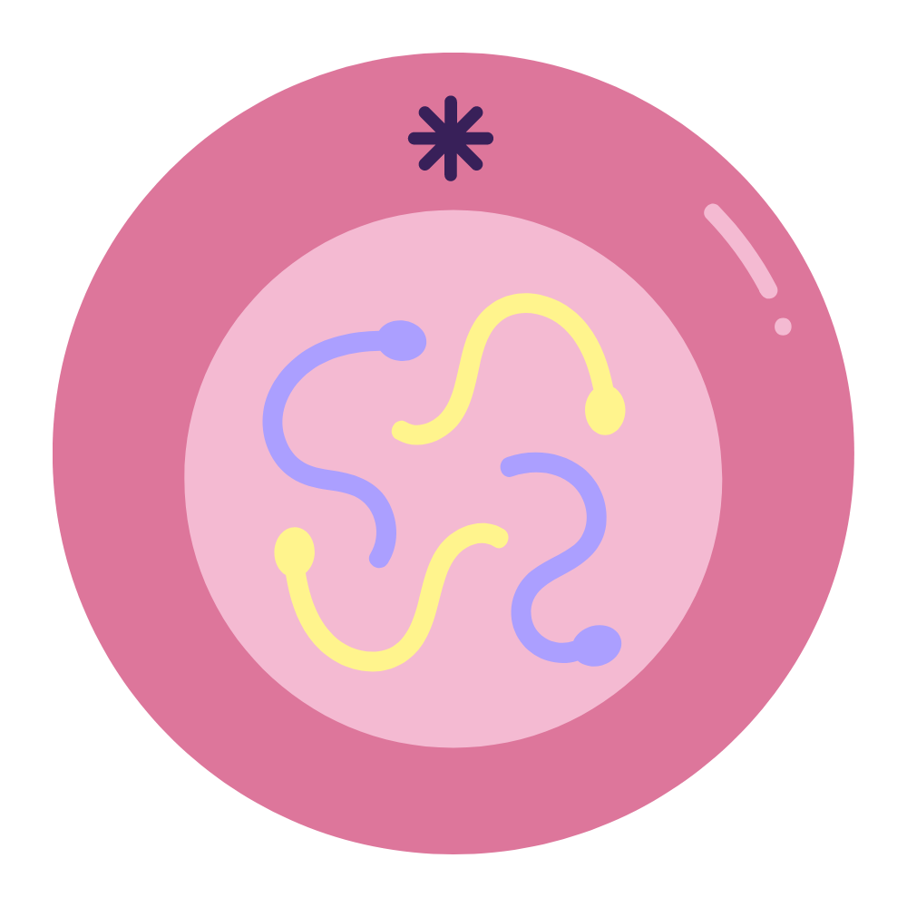

O que é
MITOSE?
A mitose é dividida em cinco fases principais que são apenas uma divisão didática, uma vez que a mitose é um processo contínuo.
Interfase
A intérfase é a primeira fase do ciclo celular que vem antes da mitose/meiose, sua função é preparar a célula para passar pelo processo de divisão, a intérfase é divida entre três etapas, G1, S e G2.
G1
Transcrição e tradução das organelas, reiniciando a produção de RNA e síntese de proteínas e organelas citoplasmáticas.
S
Preparação das células/duplicação do DNA: O DNA se duplica, formando um novo filamento, assim, gerando as cromáticas irmãs.
G2
Finalização, DNA se consensa/espiraliza (enrola), sintetizando proteínas novamente.
Prófase
A primeira etapa da mitose. Nessa fase, algumas importantes modificações são observadas. Entre as alterações da prófase, destacam-se a condensação dos cromossomos, o desaparecimento dos nucléolos e o início da formação do fuso mitótico. Os fusos mitóticos são formados por fibras do fuso, que são feixes de microtúbulos. A montagem dos microtúbulos que formam os fusos ocorre no centrossomo, também chamado de centro organizador de microtúbulos. Nessa etapa, verificamos que cada cromossomo duplicado está presente como duas cromátides irmãs, as quais estão unidas por meio de seus centrômeros (uma constrição localizada no cromossomo) e ao longo de seus braços.

Prometáfase
Na prometáfase, verifica-se a fragmentação do envelope nuclear, e os cromossomos continuam sua condensação. No centrômero dos cromossomos, nota-se a presença do cinetócoro (complexos formados por proteína especializadas), que serve de local para a ligação dos microtúbulos.
Metáfase
Na metáfase, observamos que os centrossomos estão posicionados em polos opostos da célula, e os cromossomos estão reunidos na chamada placa metafásica (plano equatorial). Nessa fase, já não se observa nem o envoltório nuclear, nem o nucléolo.

Anáfase
A anáfase é a fase mais curta da mitose, inicia-se de maneira abrupta com a separação simultânea das cromátides irmãs e completa-se dentro de poucos minutos. Nessa etapa, cada cromátide começa a se mover em direção ao lado oposto da célula. Esse movimento acontece em consequência do encurtamento dos microtúbulos do cinetócoro em razão da perda de subunidades de tubulina. Nessa etapa, vemos o alongamento da célula e no final da etapa de anáfase observa-se que há, em cada extremidade, uma coleção completa de cromossomos.

Telófase
Na telófase, é possível notar a formação dos núcleos por causa do ressurgimento dos envelopes nucleares ao redor de cada lote de cromossomo. Os envelopes surgem a partir de fragmentos do núcleo da célula-mãe e de outras porções do sistema de endomembranas da célula. Além do núcleo, o nucléolo também reaparece. Nessa fase, verifica-se também que os cromossomos se descondensam, os microtúbulos que ainda estão presentes desaparecem. Nessa fase, a mitose é finalizada e os núcleos das células-filhas entram em interfase.

Citocinese
A citocinese é a divisão do citoplasma, que dá origem as duas células-filhas. Geralmente, a citocinese ocorre ao final da telófase. A citocinese é um processo que ocorre de maneira diferente nas células vegetais e nas células animais.
Célula Somática
Células somáticas são quaisquer células responsáveis pela formação de tecidos e órgãos em organismos multicelulares. Esta classificação engloba todas as células diplóides do corpo humano, que se replicam apenas por processo de mitose e que, portanto, não estão envolvidas diretamente na reprodução.